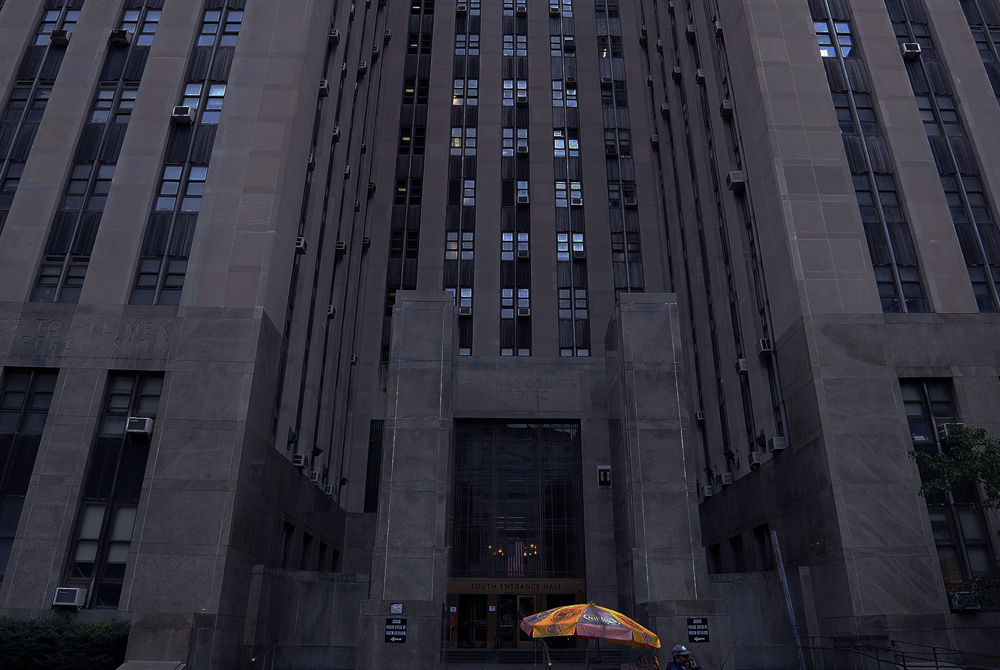

A night at the court
Arraignments at the Manhattan County Criminal Court
(2016. nov 16.)
“Quiet, please!” an officer from the corner of the courtroom shouts. The policemen, the attorneys and the viewers as well finish chit-chatting in an instance. The room is silent. It is time for the arraignment of Mr Alejandro Elones, who is charged with drug possession and harassment on the second degree. He steps in front of the judge, Robert S. Singer, while another araignee goes up to the glass booth in the front of the room to exchange some words with their designated attorney. Mr Elones’ attorney, a woman in her thirties, collects documents from her desk, then after a few seconds of hesitation picks up the Marquez book she is reading. She steps on stage with all these documents held under her arm. She exchanges a few words with the defendant, who soon pleads guilty to all charges.
“I messed up” he admits.
It is 9 pm on a Sunday night, and there are several other defendants waiting around in the room, waiting to be arraigned at the night court in Manhattan. The New York County Criminal Court in Manhattan, alongside with the city’s other courts was established in 1962 by the New York City Criminal Court Act. Its location at 100 Centre street in Manhattan handles all the arrangements for crimes committed in the borough. When someone is charged with a crime, the arraignment is the first step in the judicial process, where the defendant can either plead guilty and accept whatever punishment the judge bestows upon them, or plead innocent and pursue a jury trial. All arraignments need to happen no more than 24 hours after the arrest was made (hence the necessity of night courts) and most of the cases are open to the public.
Most of the defendants sit in a bunch at the front right corner of the room. Two handcuffed man wait in the first row of the benches, with correctional officers sitting on both of their sides. The people in the corner are constantly chatting, but the defendants on the benches seem more quiet - the handcuffs seem to works as silencers too.
Another defendant, Jason Aaron pleads guilty to larceny, and has his handcuffs removed before being set free. His public defender steps to him and hands him a metrocard, an item that has been handed out for everyone who is allowed to walk free after the arraignment. Besides the card, the weary-looking Mr Aaron also gets a brochure with homeless shelter options listed in it.
“Let’s get you back into that society” his attorney tells him.
This point in the judicial system is still not very deep down the rabbit hole. The arraignments are happening for misdemeanors thats maximum sentence is one year in prison, and for felonies, where the sentence can range from one to ten years. Most people are released with warrants or on bail, and almost no one pleads innocent to what they are charged with. James Spence is no different. His arraignment for disorderly conduct is over in less than a minute, and soon he walks, just like the most.
“Get the warrant first thing in the morning” the judge tells him before he leaves.
Times between arraignments vary, but usually there is something to pay attention to in every ten minutes. The length of the arraignments are never the same, but they tend to be short - after all, no one really wants to be standing in front of a judge.
Twitter Go Back
Go Back